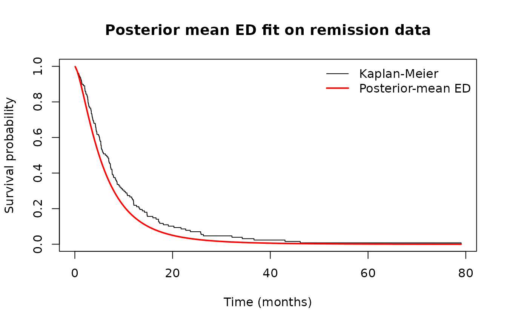

Bayesian Estimation with BetaDanish
Bilal Ahmad
2026-06-03
Source:vignettes/bd-bayesian.Rmd
bd-bayesian.Rmd1. Overview
This vignette walks through Bayesian estimation of the
three-parameter Exponentiated Danish (ED) submodel and the full
four-parameter Beta-Danish distribution using
bayes_betadanish().
2. ED submodel on bladder cancer remission times
library(BetaDanish)
data("remission")
fit_bayes <- bayes_betadanish(
time = remission$time,
status = remission$status,
submodel = TRUE,
burnin = 2000, mcmc = 5000,
tune = 0.5,
seed = 1
)
#>
#>
#> @@@@@@@@@@@@@@@@@@@@@@@@@@@@@@@@@@@@@@@@@@@@@@@@@@@@@@@@@
#> The Metropolis acceptance rate was 0.67971
#> @@@@@@@@@@@@@@@@@@@@@@@@@@@@@@@@@@@@@@@@@@@@@@@@@@@@@@@@@
print(fit_bayes)
#>
#> Beta-Danish Bayesian Fit (3-Parameter ED Submodel)
#> Random-walk Metropolis via MCMCpack::MCMCmetrop1R
#>
#>
#> Iterations = 1:5000
#> Thinning interval = 1
#> Number of chains = 1
#> Sample size per chain = 5000
#>
#> 1. Empirical mean and standard deviation for each variable,
#> plus standard error of the mean:
#>
#> Mean SD Naive SE Time-series SE
#> b 5.22494 3.07019 0.0434190 0.242192
#> c 1.53540 0.27271 0.0038567 0.020974
#> k 0.06975 0.04315 0.0006103 0.003295
#>
#> 2. Quantiles for each variable:
#>
#> 2.5% 25% 50% 75% 97.5%
#> b 2.34806 3.37466 4.37153 5.92385 14.7311
#> c 1.10766 1.33060 1.50091 1.69558 2.1673
#> k 0.01368 0.03736 0.06127 0.09223 0.1766
#>
#>
#> 95% HPD intervals:
#> lower upper
#> b 1.930001455 11.3777080
#> c 1.060715381 2.0757817
#> k 0.007077114 0.1560365
#> attr(,"Probability")
#> [1] 0.953. Posterior diagnostics
par(op)4. Posterior survival vs Kaplan-Meier
post_mean <- summary(draws)$statistics[, "Mean"]
b <- post_mean["b"]; c <- post_mean["c"]; k <- post_mean["k"]
km <- survival::survfit(survival::Surv(time, status) ~ 1, data = remission)
plot(km, conf.int = FALSE, xlab = "Time (months)",
ylab = "Survival probability",
main = "Posterior mean ED fit on remission data")
t_grid <- seq(0.1, max(remission$time), length.out = 200)
S_post <- pbetadanish(t_grid, a = 1, b = b, c = c, k = k,
lower.tail = FALSE)
lines(t_grid, S_post, col = "red", lwd = 2)
legend("topright",
legend = c("Kaplan-Meier", "Posterior-mean ED"),
col = c("black", "red"), lty = 1, lwd = c(1, 2), bty = "n")